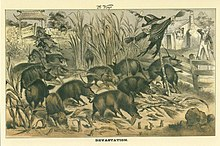

Burlingame Treaty
1868
Under the terms of the Burlingame Treaty of 1868 the United States guaranteed that
Chinese citizens in the United States, "shall enjoy the same privileges, immunities, and exemptions
in respect to travel or residence, as may there be enjoyed by the citizens or subjects of the most
favored nation." Chinese citizens still, however, faced segregation and discrimination. They
experienced violence, were driven out of towns, their children were segregated at schools and they
were not allowed to become naturalized citizens.
